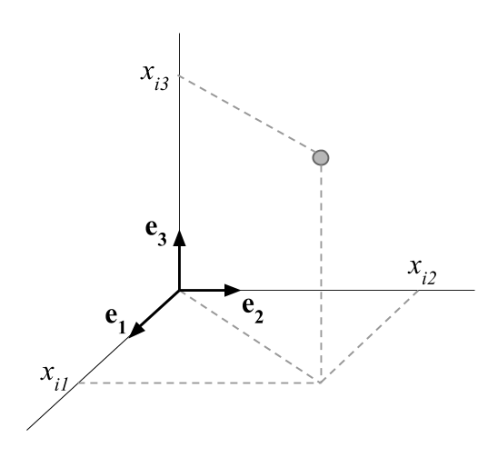
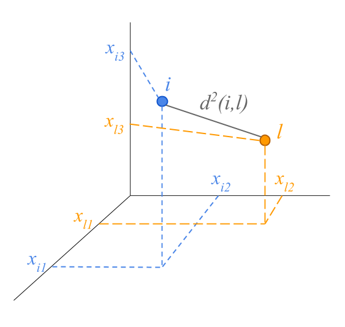
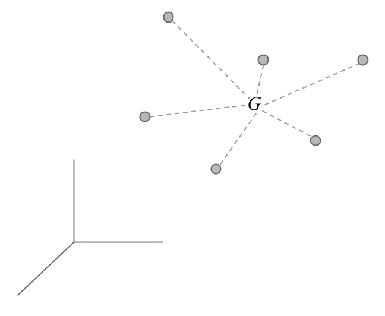
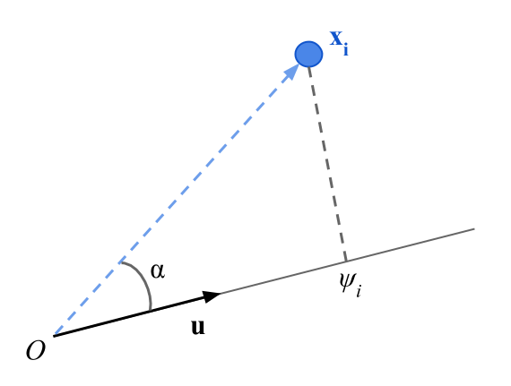
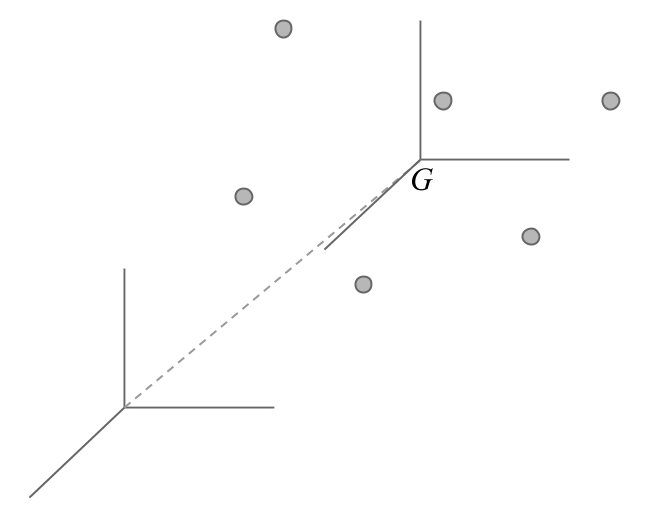
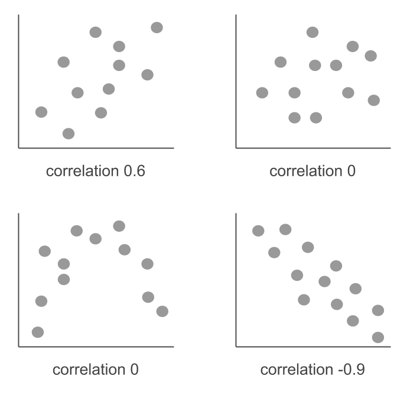

5 Appendix A: Fundamentals
In this appendix we discuss some fundamental notions that will allow us to provide a geometrical development of Principal Component Analysis.
5.1 Space of p-Dimensions
The objects that surround us are in a three dimensional space. Each object is defined by its coordinates in a basis formed by an origin and three orthogonal axes.

The axes are defined by vectors of unit length the provide a direction to each axis. The three vectors \((\mathbf{e_1}, \mathbf{e_2}, \mathbf{e_3})\) define a basis in the space of three dimensions. We can actually define various basis for the same space.
It is possible to generalize the space of three dimensions to spaces of higher dimensions. However, objects in spaces of dimensions greater than three cannot be visualized.
The points located in a space of \(p\) dimensions are defined by their \(p\) coordinates on the associated \(p\) axes:
\[ i \longrightarrow (x_{i1}, x_{i2}, \dots, x_{ip}) \]
This kind of multidmensional spaces are introduced in data analysis methods in order to map each point to a row of a data table. The coordinates are defined by the values of the row. Geometrically, these points are located in a space of as many dimensions as number of columns in the table.
Analogously, the columns of the table (i.e. the variables) can be regarded as points in a space in which the coordinates are the values of the column.
5.2 Distances between points
The squared of the distance between two points can be calculated by the sum of the squared of the differences between coordinates:
\[ d^2(i,l) = (x_{i1} - x_{l1})^2 + (x_{i2} - x_{l2})^2 + (x_{i3} - x_{l3})^2 \]

The distance formula can be extended to spaces with more than three dimensions.
\[ d^2(i,l) = (x_{i1} - x_{l1})^2 + (x_{i2} - x_{l2})^2 + \dots + (x_{ip} - x_{lp})^2 \]
5.3 Center of Gravity
For every cloud of points, there is an average point, called the center of gravity.

If the points have an associated weight (\(p_i\) for individual \(i\)), the coordinate of the center of gravity on the \(i\) axis is:
\[ G_j = \sum_{i=1}^{n} p_i \hspace{1mm} x_{ij} \]
The center of gravity corresponds the statistical notion of mean or average point.
5.4 Inertia of a cloud of points
We measure the inertia of a cloud with respect to its of gravity by:
\[ I = \sum_{i=1}^{n} p_i \hspace{1mm} d^2(i,G) \]
The inertia is a measure of spread; to be more precise, it is a measure of weighted spread of the points.
The statistical notion associated to the inertia is the variance (i.e. spread around the mean).
5.5 Projection of the cloud of points on a line
The projection of a point can be obtained by the scalar product of the point and the unit vector \(\mathbf{u}\) defining the line on which the projection is performed.

\[ \psi_i = \|\mathbf{x}\| \hspace{1mm} \|\mathbf{u}\| \hspace{1mm} cos(\alpha) = \sum_{j=1}^{p} x_{ij} u_j \]
with
\[ \|\mathbf{u}\|^2 = \sum_{j=1}^{p} u_{j}^{2} = 1 \]
The inertia of the projected cloud on a line is the variance of the projections on the line \(\mathbf{u}\). The square root of the variance is called standard deviation.
\[ I_u = \sum_{i=1}^{n} p_i \hspace{1mm} \psi_{i}^{2} \]
with
\[ \sum_{i=1}^{n} \psi_i = 0 \]
There is an equivalence between the mechanics notion of Inertia and the statistical notion of Variance.
5.6 Centered and Standardized Variable
We say that a variable is mean-centered when its mean is zero. When we centered all the variables, we shift the origin of a cloud of points to the center of gravity.

In addition, if we divide each value by the standard deviation of the variable, this becomes mean-centered and standardized. The variance of a centered and standardized variable is equal to one.
\[\begin{align*} z_{ij} &= \frac{x_{ij} - \bar{x}_j}{s_j} \\ & \\ var(\mathbf{z_j}) &= \sum_{i=1}^{n} p_i (z_{ij} - \bar{z}_j)^2 = \frac{\sum_{i=1}^{n} p_i (x_{ij} - \bar{x}_j)^2}{s_{j}^{2}} = 1 \end{align*}\]
The variance of a variable is the squared of the distance from the variable-point to the origin. The centered and standardized variables have a distance of one unit from the origin (i.e. they are on a sphere of radius 1).
5.7 Correlation Coefficient
The correlation coefficient is a measure of the association between two variables when such association is linear.
We calculate the correlation coefficient by centering and normalizing the variables:
\[ cor(\mathbf{x_j}, \mathbf{x_k}) = \sum_{i=1}^{n} p_i \left ( \frac{x_{ij} - \bar{x}_j}{s_j} \right ) \left ( \frac{x_{ik} - \bar{x}_k}{s_k} \right ) \]
The correlation coefficient can be interpreted as the scalar product of two standardized variables. Given that the distance to the origin of these variables is equal to one, we see that the correlation between two variables coincides with the cosine of the angle formed by them.
The correlation coefficient ranges between -1 and +1. When the correlation is equal to 1, this indicates that there is a perfect lineal association between the two variables. A correlation coefficient equal to -1 indicates that there is a perfect inverse lineal association. A correlation coefficient equals to zero may indicate an absence of association between the two variables, although it may also hide a non linear association (e.g. quadratic).

After having calculated a correlation coefficient of a sample, it can be interesting to ask whether this coefficient corresponds to a null correlation within the population. To answer this question, we can conduct a hypothesis test assuming that:
\[\begin{align*} E_{H_0} (r) &= 0 \\ & \\ var_{H_0} (r) &= \frac{1}{n-1} \end{align*}\]
When we are close to a value of 0, we have symmetry in the distribution of the coefficient of correlation. Therefore, under the null hypothesis we assume that the distribution of the correlation is approximately normal. We reject the null hypothesis, at the 5% significance level, if the correlation coefficient is larger than \(\pm 2 / \sqrt{n-1}\).